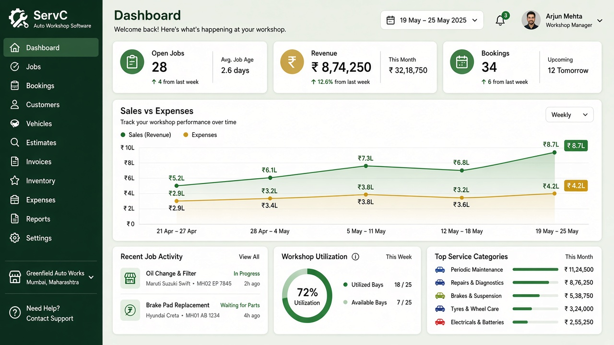
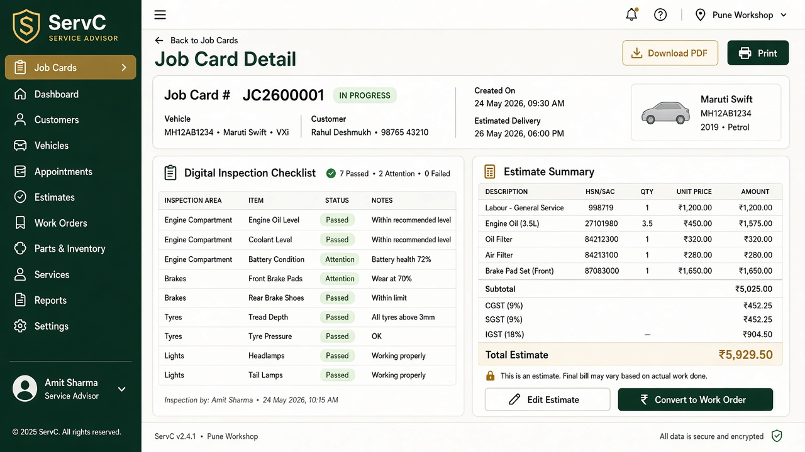
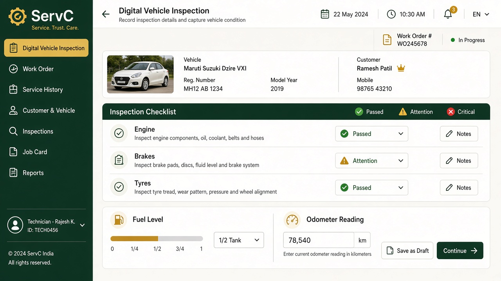
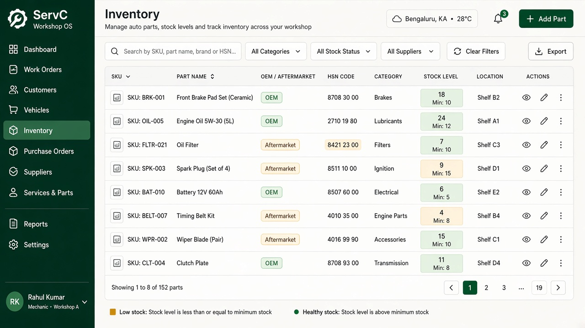
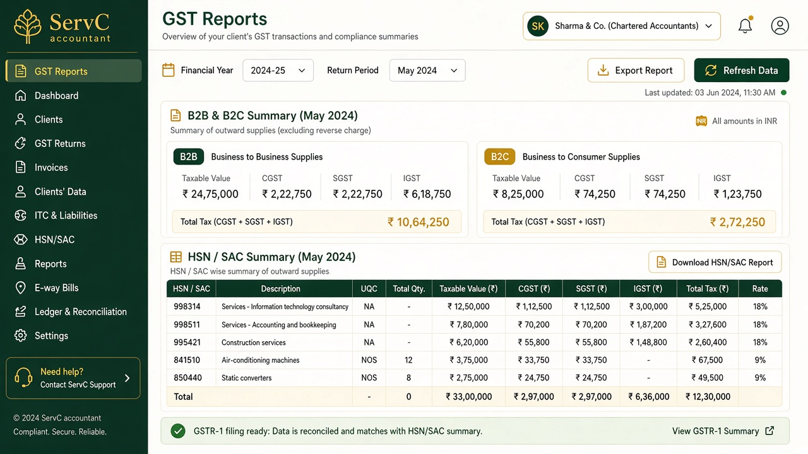
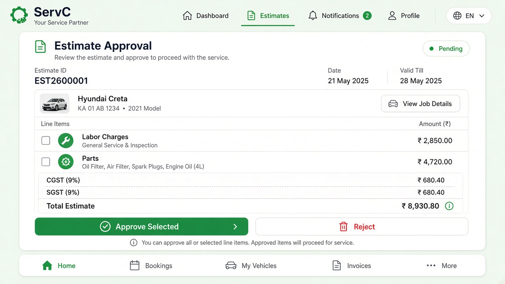
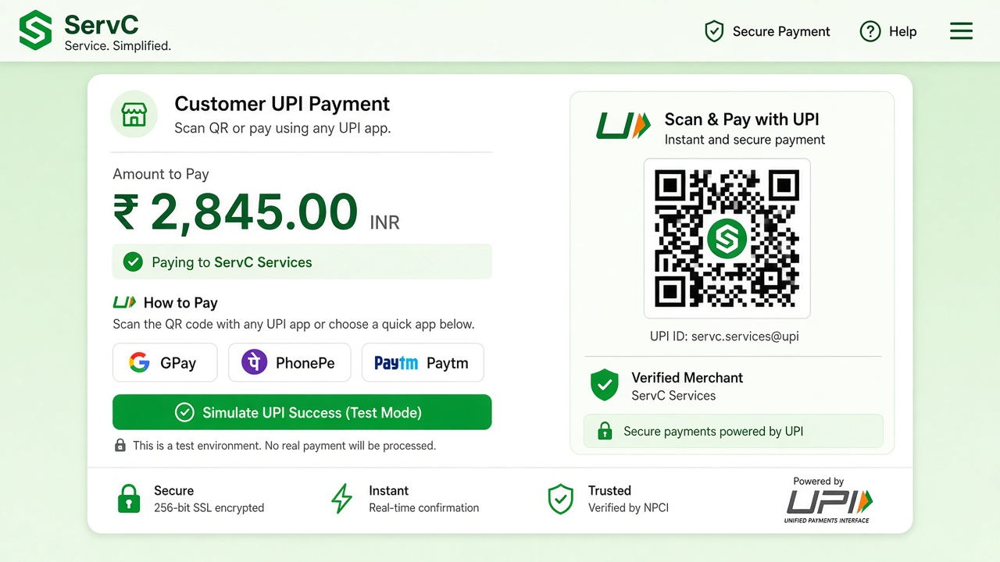

Interactive gallery
Pick a persona to see how ServC supports their day — from bay utilisation to WhatsApp approvals and GST settlement.
See revenue, OpEx, bay load, and open jobs at a glance. Drill into GST summaries and technician productivity without leaving the dashboard.

Create job cards, capture inspection findings, draft GST-aware estimates, and push WhatsApp approvals before technicians start.

Technicians see assigned work, run digital inspections, and hand off to Quality Check without paperwork.

Track OEM, aftermarket, and local-market SKUs with HSN, branch quantities, and low-stock alerts that feed purchase orders.

Issue tax invoices with customer GSTIN for ITC, track partial payments, and export GSTR-1 style summaries.

Customers book online, track job status, approve estimates on WhatsApp, and pay via UPI when the car is ready.
123456 (demo mode)
